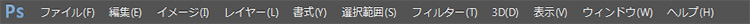

本項では、メニューバーの機能について学習します。
メニューバーとは画面最上部に「ファイル」や「編集」という文字が並んでいる場所です。
ここからフォトショップのさまざまな機能を呼び出すことができます。
画像の加工などで必要となる標準的な機能は
[ツールパネル]や[パネル]から呼び出すことができますが、
[メニューバー]からしか呼び出せないような機能もたくさんあります。

メニューバーの表示
[ファイル]や[編集]、[ヘルプ]といったメニューは
フォトショップ以外のアプリケーションでもありますが、
メニューの内容はフォトショップ独自のものが多く含まれています。
各メニュー内の細かい機能については後ほど学習しますが、
概要については下の表を参考にしてください。
| メニュー名 |
機能の概要 |
|---|---|
| ファイル |
新規ファイル作成や既存のファイルを開く、ファイルの保存・書き出し、印刷など |
| 編集 |
コピーやペースト、変形など（Windowsのみ環境設定があります） |
| イメージ |
カラーモードや解像度の変更、色調補正など |
| レイヤー |
レイヤー操作全般、レイヤースタイル呼び出しなど |
| 書式 | 文字に対する各種設定の呼び出しなど |
| 選択範囲 |
選択範囲全般の操作や保存、呼び出し設定 |
| フィルター |
各種フィルター（特殊効果）の実行 |
| 3D | 既存の 3D オブジェクトの操作と結合、新規 3D オブジェクトの作成、3D テクスチャの作成、3D オブジェクトと 2D 画像の結合の設定 |
| 表示 |
色校正や表示倍率の変更、ガイドやグリッドの表示設定 |
| ウィンドウ |
各種パネルの呼び出し、ワークスペースの管理 |
| ヘルプ | ヘルプ機能およびユーザー登録、アップデートの確認など |
以上でこの項の学習は終了です。
ファイルは閉じて次の項へ進んでください。